Unit 2 Exploratory Data Analysis
Overview
This session has 4 components:
- Data, data summaries and generic plotting in R (this should be refresher!)
- An introduction to visualisation using the
ggplot2package (this builds on its surreptitious introduction in Week 1!) - Data wrangling with
dplyr - Using piping syntax
There is also an optional additional section on enhanced mapping with the ggplot2 package (loaded with the tidyverse package).
The overarching theme of this practical is Explanatory Data Analysis or EDA. The aim of EDA is to generate understandings of the data, by revealing patterns, trends and relationships within and amongst the data variables. EDA can involve numeric summaries of data properties (data distribution, central tendencies, spread, etc), correlations with other variables, summarising these in tables, or EDA can summarise data graphically, through the use of different types of plots.
EDA in this way provides information about the structure of the data - the patterns, trends, interactions and relationships within and between variables. It is a critical part of any data analysis. It underpins the choice and development of methods and approaches of analysis, including which variables to include in modelling.
You will need to load some packages. Note you will probably need to install the RColorBrewer package. Remember that packages should be installed with their dependencies, and they only need to installed once, and after they are installed they can simply be called using the library function. So you only need to install packages that you have not installed before in earlier weeks. Last week you should have installed tidyverse and sf in the main practical.
The code below lists the packages in an object called packages and then tests to see of they installed with the result stored in not_installed and then installs missing packages:
# check and install missing packages
packages <- c("sf", "RColorBrewer", "tidyverse")
# check which packages are not installed
not_installed <- packages[!packages %in% installed.packages()[, "Package"]]
# install missing packages
if (length(not_installed) > 1) {
install.packages(not_installed, repos = "https://cran.rstudio.com/", dep = T)
}2.1 Data, data summaries and generic plotting in R
The data used in this session are area-level demographic and voting data covering the UK’s referendum vote on membership of the EU. You’ll start by exploring the results data published for all 380 Local Authority Districts (LADs) in Great Britain (GB) made available in by The Electoral Commission. Later you’ll explore the geography of this vote against demographic data collected from the 2011 Census. These data have been collated for these practicals into a single spatial dataset in geojson format (data_gb.geojson).
The data_gb object you have loaded is in sf format in R. You can examine the data and the attributes that are included:
The aim of EDA is to understand data properties and data structure.
R contains many functions for examining numeric data properties and the dollar sign ($) can be used to access individual variables (attributes):
summary(data_gb$share_leave) # summary
mean(data_gb$share_leave) # mean
sd(data_gb$share_leave) # standard deviation
var(data_gb$share_leave) # variance
IQR(data_gb$share_leave) # interquartile rangeThese can be called for individually named variables as above. Some generic plotting of continuous variables can also be used. Note that the density plot is a smoothed version of the histogram. There is a link at the end of this practical that has full explanation of density histograms.
# histogram
hist(data_gb$share_leave)
# denisty histogram
hist(data_gb$share_leave, prob=T)
# add a line
lines(density(data_gb$share_leave,na.rm=T),
col='olivedrab',lwd=2)
# and ticks indicating the data points (it looks like a rug!)
rug(data_gb$share_leave)And boxplots can be called in the same way
Recall that histograms are visual representation of the data / variable distributions, and boxplots show the median and inter-quartile ranges - some further information on these is available here:
- https://www.khanacademy.org/math/statistics-probability/summarizing-quantitative-data/box-whisker-plots/a/box-plot-review
- https://wellbeingatschool.org.nz/information-sheet/understanding-and-interpreting-box-plots
And different groups can be compared, here grouping by Region:
# save the plot parameters and set new ones
old.par = par()
par = par(mar = c(12,4,4,4))
# do the boxplots by groups and shade
boxplot(data_gb$share_leave ~ data_gb$Region,
las = 2, xlab = "", ylab = "Vote leave share",
col = brewer.pal(11, "Spectral"))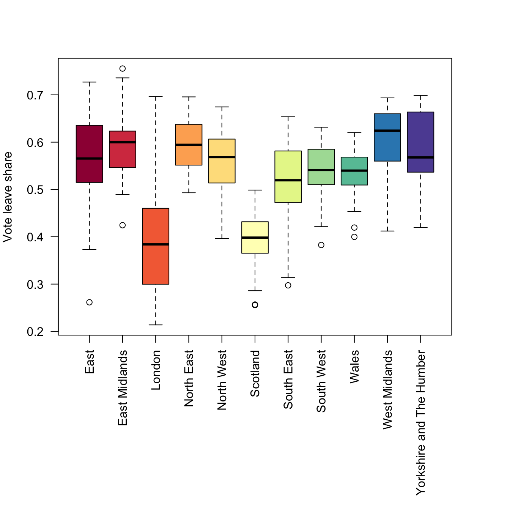
Figure 2.1: Boxplots of the leave vote share, grouped by regions.
Non-numeric data can also be summarised using tables and barplots.
# table
table(data_gb$Region)
# xtabs for 1 variable
xtabs(data_gb$Remain ~ data_gb$Region)
# xtabs for 2 variables summarised by region
xtabs(cbind(Remain = data_gb$Remain, Leave = data_gb$Leave) ~data_gb$Region)Barplots require summarised data, hence the creation of the tab variable below:
# create a table
tab = xtabs(data_gb$Leave ~ data_gb$Region) / 1000
# call the bar plot (note the use of sort!)
par = par(mar = c(12,4,4,4))
barplot(sort(tab), las = 2,
col = brewer.pal(11, "Spectral"),
main = "Leave votes (1000s)")
par = old.parThe above code snippets have shown the default plotting for single numeric variables, and counts of categorical ones, with some grouping (in this case by Regions). The final set of plotting routines examines the interaction of 2 numeric variables using a scatterplot.
The code below summarises the correlations between variables and then shows these graphically:
## [1] -0.7579308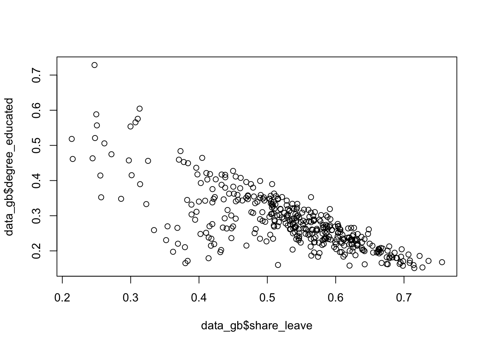
Figure 2.2: A simple scatterplot.
This can be controlled and enhanced (examine the help for points - ?points):
plot(degree_educated ~ share_leave, data = data_gb,
pch = 20, col = "tomato",
xlab = "Leave Share", ylab = "Prop. Degree educated")
# add a trend line
abline(lm(degree_educated ~ share_leave, data = data_gb))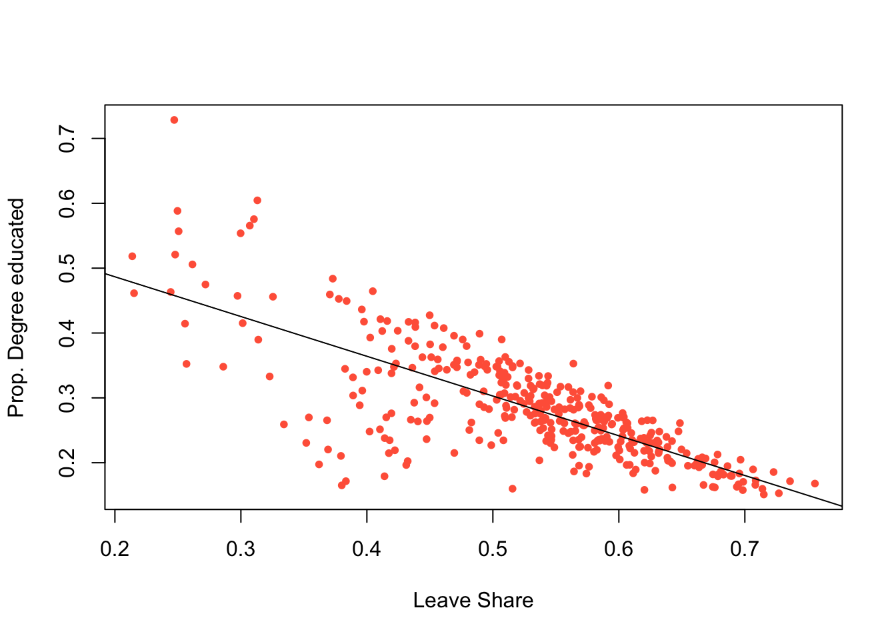
Figure 2.3: A simple scatterplot with a trend line.
2.2 An introduction to visualisation using the ggplot2 package
The ggplot2 package supports many types of visual summary. It allows multiple, simultaneous visualizations, supports grouping by colour, shape and facets. The precise choice of which, out of the many possible options, requires some careful thinking. Does the data need to be sorted or faceted? Should transparency be used. Do I need to group the data? etc.
The ggplot2 package is installed with the tidyverse package. R has several systems for making visual outputs such as graphs, but ggplot2 is one of the most elegant and most versatile. It implements the grammar of graphics (Wilkinson 2012), a coherent system for describing and constructing graphs using a layered approach. If you’d like to learn more about the theoretical underpinnings of ggplot2, “The Layered Grammar of Graphics” (Wickham 2010) is recommended.
2.2.1 ggplot basics
The basic idea is that graphs are composed of different layers each of which can be controlled. The basic syntax is:
# do not run this code - it is an illustration! #
# specify ggplot with some mapping aesthetics
ggplot(data = <data>, mapping = <aes>) +
geom_<function>()In this syntax first ggplot is called, a dataset is specified (<data> in the above) and some mapping aesthetics are defined (<aes>). Together, these tell ggplot which variables are to be plotted (for example, on the \(x\) and \(y\) axes), which variables are to be grouped and coloured. Finally, geom_<function>() specifies the plot type such as geom_point(), geom_line() etc. It has a default set of plot and background colours, line types and sizes for points, line width, text etc, all of which can be overwritten.
These basics are probably best described through illustration. The code below recreates the previous scatterplot and assigns it to p:
p = ggplot(data = data_gb, aes(x = share_leave, y = degree_educated)) +
geom_point(col = "dodgerblue", shape = 20) +
xlab("Leave Share") + ylab("Prop. Degree educated")This can then be called to generate the plot
However because of the layered nature it can also be augmented and further graphical elements can be added as layers. The example below fits a linear trend line:
This is equivalent to:
p = ggplot(data = data_gb, aes(x = share_leave, y = degree_educated)) +
geom_point(col = "dodgerblue", shape = 20) +
xlab("Leave Share") + ylab("Prop. Degree educated") +
geom_smooth(method = "lm")
pNote that there is some flexibility in the ggplot syntax. An alternative is to specify the data with the plot function:
This syntax is useful if you want to plot different layers or objects together.
Histograms and boxplots of single continuous variables can be visualised and for histograms the bins parameter controls the number of histogram groups (columns):
# a density plot
ggplot(data = data_gb, aes(x = share_leave)) +
geom_density()
# a histogram
ggplot(data = data_gb, aes(x = share_leave)) +
geom_histogram(bins = 30, col = "red", fill = "salmon")
# a boxplot
ggplot(data = data_gb, aes(x = share_leave)) +
geom_boxplot(fill = "tomato", width = 0.2) +
xlab("Leave Share") + ylab("")A density histogram can also be constructed by specifying a density aesthetic for y in the geom_histogram parameter after_stat(density). The areas of each bin indicate the relative probability of the bins in the distribution (the sum of the bin counts is 1). A density function can also be added to the histogram using the code below:
ggplot(data_gb, aes(x = share_leave)) +
geom_histogram(aes(y=after_stat(density)),bins = 30,
fill="tomato", col="white") +
geom_density(alpha=.5, fill="#FF6666")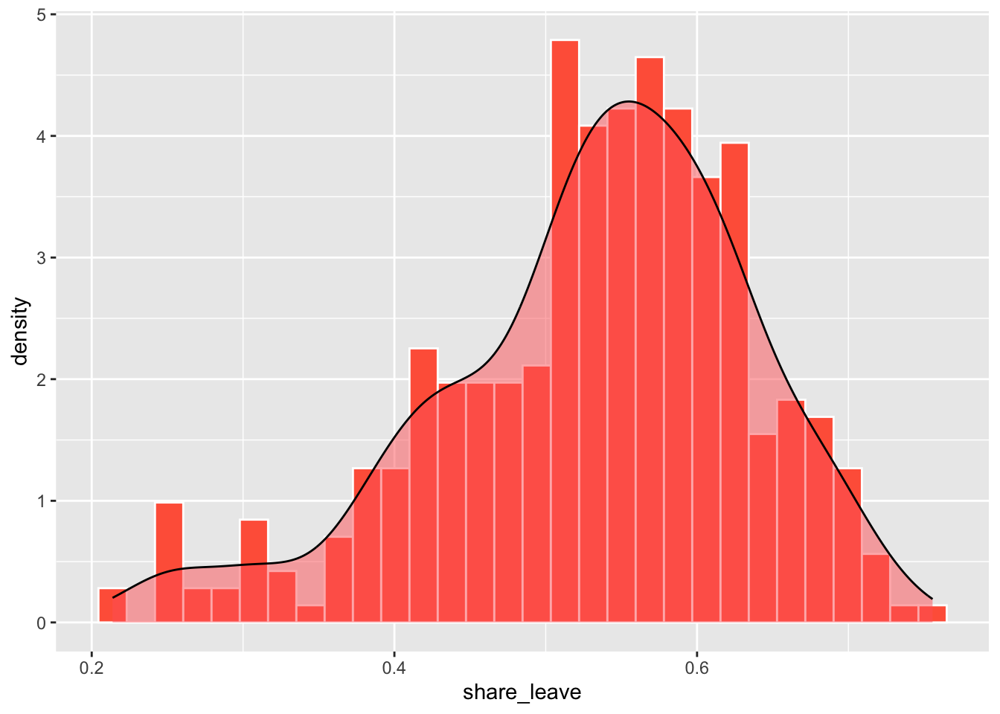
Figure 2.4: A density histogram with a density plot.
The line geom_histogram(aes(y=..density..)... rescales the histogram counts so that bar areas integrate to 1, but is otherwise the same as the standard ggplot2 histogram. The geom_density() function adds a density curve to the plot with a transparency term (alpha=.5). You could plot just the density curve by running the code below.
ggplot(data_gb, aes(x = share_leave)) +
geom_density(aes(y=after_stat(density)), alpha=.5, fill="#FF6666")The ggplot2 package includes a number of pre-defined styles, called by theme_X(), that can be added as a layer. The code below applies theme_minimal() as in the figure below.
ggplot(data_gb, aes(x = share_leave, y = degree_educated)) +
# specify point characteristics
geom_point(col = "tomato", shape = 20, size = 2.7) +
xlab("Leave Share") + ylab("Prop. Degree educated") +
# specify a trend line and a theme/style
geom_smooth(method = "lm", colour = "#DE2D26") +
theme_minimal() You should explore other ggplot themes which are listed if you enter ?theme_bw at the console.
In a similar way bar plots can be constructed. The code below does this but ggplot2 does not need tabulated data to be passed to it:
unique(factor(data_gb$Region))
ggplot(data_gb, aes(y = factor(Region))) +
geom_bar(stat = "count") + xlab("Count")This can be ordered or sorted using the fct_infreq function from the forcats package loaded with tidyverse:
ggplot(data_gb, aes(y = fct_infreq(factor(Region)))) +
geom_bar(stat = "count") + xlab("Count")
# with colours - note the use of the fill in the mapping aesthetics
ggplot(data_gb, aes(y = fct_infreq(factor(Region)), fill = Region)) +
geom_bar(stat = "count") + xlab("Count")A final example uses bespoke colours passed to the scale_fill_manual functions and a brewer palette to show the number of LADs in each region:
ggplot(data_gb, aes(y = fct_infreq(factor(Region)), fill = Region)) +
geom_bar(stat = "count") + xlab("Count") +
scale_fill_manual("Region", values = brewer.pal(11, "Set3")) +
xlab("Count")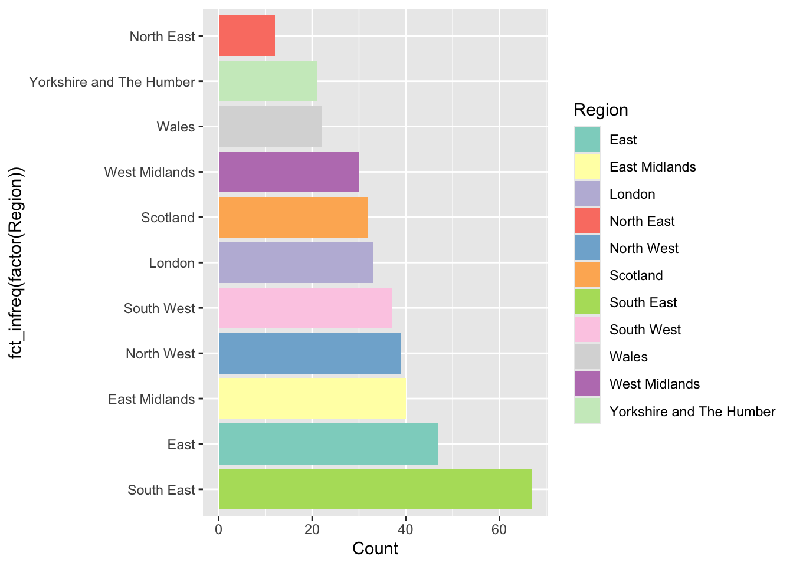
Figure 2.5: An ordered barplot with bespoke shading.
You can examine the range of Brewer palettes with the code below and examine them here: https://colorbrewer2.org/
You may wish to make the plot window in your RStudio session bigger to see these clearly. :::: {.qbox} ::: {.center} Task 1 :::
The code below creates a scatter plot of the share_leave and single_ethnicity_household variables using the generic plot function. Your task is to recreate this using ggplot and add a linear trend line.
# Task 1
plot(single_ethnicity_household ~ share_leave, data = data_gb,
pch = 4, col = "dodgerblue", cex = 0.5)::::
2.2.2 Groups with ggplot
An important consideration is the different ways that ggplot can be used to display groups of data. Groups might be different treatments, classes or other discrete categories within the data, or groups that are defined by the user. There are two basic plotting options for displaying groups.
First multiple groups can be displayed in the same plot if they are specified within the mapping aesthetics, using parameters like size, colour, shape, etc. The code above for bar plots did this using the fill aesthetic. The code below does this with colour as the main grouping parameter. Notice how, having been grouped, the geom_smooth function plots a trend line for each group.
p = ggplot(data = data_gb,
mapping = aes(x = share_leave, y = degree_educated, colour = Region)) +
geom_point()
# have a look
p
# specify a trend line
p + geom_smooth(method = "lm") The second option is to generate individual plots for each group using some kind of faceting. The code below generates separate scatterplots for each Region.
ggplot(data = data_gb, mapping = aes(x = share_leave, y = no_car)) +
geom_point() +
# add a trend line
geom_smooth(method = "lm", colour = "#DE2D26") +
# specify the faceting and a theme / style
facet_wrap("Region", nrow = 3) ## `geom_smooth()` using formula = 'y ~ x'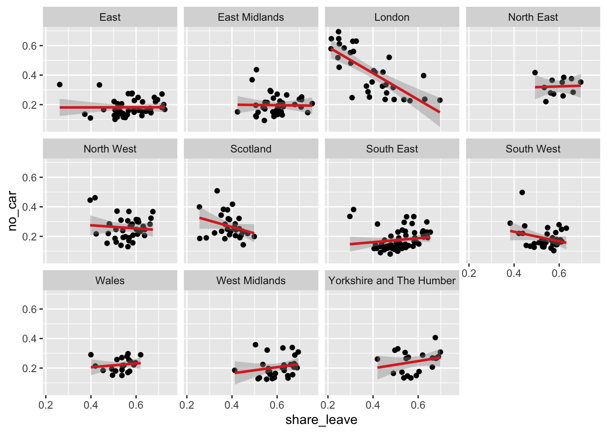
Figure 2.6: A faceted set of scatterplots.
Task 2
Complete the code snippet below to create a set of histograms of the share_leave variable, faceted for the Regions
Task 3
The above code creates a faceted plot of the share_leave and no_car variables, for each Region. The facets show that the relationship is broadly the same (examine the angle of the slopes) in the different regions. Your task is to examine the relationship with between the share_leave and single_ethnicity_household variables and to determine whether there are regional differences in this relationship:
2.3 Data wrangling with dplyr
The dplyr package is part of the tidyverse. It provides a suite of tools for manipulating and summarising data tables and spatial data and contains a number of functions for data transformations.
A simple example is filter - this simply selects a subset of rows from a data frame.
The code below converts the data_gb to a tidy data frame and then finds the subset of data for the London Region:
# extract the data frame
data_df = st_drop_geometry(data_gb)
# subset and assign to tmp
tmp = filter(data_df, Region == "London")
# have a look at the first 6 rows
head(tmp) A few things to note here:
- The first argument of
filteris the data frame; - The second argument is a logical expression specifying rows to be subsetted;
- Column names in the data frame can be used in the logical expression more or less as though they were ordinary variables;
The logical expression can be any valid logical expression in R - thus >,<,<=,>=,== and != may all be used, as can & (and), | (or) and ! (not). The & operator is not always necessary, as it is possible to apply multiple conditions in the same filter operation by adding further logical arguments:
The filter function subsets data table rows, and the select function subsets data table columns. This can be done in different ways as is shown in the vignette (details below) and in Part 4 of this practical. The code below simply selects by variable name
The code below uses mutate to create a new variable, in this case a ratio (RL_ratio) and assigns the result to a temporary file (tmp) which can be examined:
Another data transform offered by dplyr is arrange which sorts the data in the order of one of the variables.
# ascending
head(arrange(data_df,share_leave))
# descending
head(arrange(data_df,desc(share_leave)))The filter and arrange functions are just 2 of the dplyr verbs (the package developers call them verbs because they do something!). These can be used to manipulate data singly or in a nested a sequence of operations with intermediate outputs. The important dyplyr verbs are summarised in Table 1.
| Verb | Description |
|---|---|
| filter() | Selects a subset of rows in a data frame according to user defined conditional statements |
| slice() | Selects a subset of rows in a data frame by their position (row number) |
| arrange() | Reorders the row order according to the columns specified (by 1st, 2nd and then 3rd column etc) |
| desc() | Orders a column in descending order |
| select() | Selects the subset of specified columns and reorders them vertically |
| distinct() | Finds unique values in a table |
| mutate() | Creates and adds new columns based on operations applied to existing columns e.g. NewCol = Col1 + Col2 |
| transmute() | As select but only retains the new variables |
| summarise() | Summarises values with functions that are passed to it |
| sample_n() | Takes a random sample of table rows |
| sample_frac() | Selects a fixed fraction of rows |
As well as select (data frame columns), filter (rows) and mutate (new variables) another very useful dplyr function is group_by. This is often used in conjunction with summarise to create group summaries. The code below generates a summary of the population and the votes:
## TotPop TotVotes
## 1 61371315 32741689Note that dplyr manipulations can also be combined. The code below calculates population density, creating a variable called RL_ratio and assigns the result to tmp1. It then takes tmp1 and selects this new variables with the lad15nm variable (the LAD name) and assigns the result to tmp2:
## lad15nm RL_ratio
## 1 City of London 3.0469181
## 2 Barking and Dagenham 0.6015608
## 3 Barnet 1.6475675
## 4 Bexley 0.5885196
## 5 Brent 1.4836644
## 6 Bromley 1.0262567Now the creation of all of these intermediary variables (tmp1, tmp2, etc) is a bit of pain and generates needless objects in our R session.
What we would like to be able to do is to do all of the mutating and selecting steps in one go. One option is to nest the commands and the code below does the same as the above but in a nested way:
Similarly the summarise operation above can be extended to work with grouped Regions:
# regional summary
summarise(
group_by(data_df, Region),
TotPop=sum(total_pop),TotVotes=sum(Valid_Votes)
)But this is getting complicated! And all we are doing here is trying to do 2 things - what if we wanted to undertake 10 operations on the data? Either we would have to create up to 10 intermediary variables or have a massively complicated nested code snippet, with nested operations as in the summarise and group_by example above. Another option is to use a piping syntax in which the results of one operation are directly passed or piped to another operation. This is covered in the last section of this practical.
After the practical you should explore the introductory vignette to dplyr which describes the single table verbs in dplyr :
2.3.1 Summary
So from the above section you should have noted that the dplyr package has a number of verbs for data table manipulations. These can be used to select variables or fields and to filter records or observations using logical statements. They can also be used to create new variables using the mutate function and group summaries can be easily generated using a combination of the summarise and group_by functions. The last part of the previous section highlighted that sequences of nested dplyr verbs can be applied in piped sequence rather than a clumsy code block and piped directly to ggplot. In the next section we will undertake a few more manipulations of data using piped commands. These illustrate some key approaches for data wrangling or transformations.
2.4 Using piping syntax
Data in tibble format are basically data frames with a few modifications to help them work better in a tidyverse framework. A standard data frame can be converted to a tibble with the function as_tibble :
Notice the difference in the print out between the tibble format and standard data.frame.
Some of the nested dplyr verbs and operations are difficult to follow as each dplyr operation required an input dataset as its first argument. When there are several layers of parenthesis (brackets), it can be hard to see immediately which parameters relate to the individual dplyr verbs for sorting, filtering, summarising, grouping and arranging (see for example the regional summary in the last section, reproduced below:
# regional summary
summarise(
group_by(data_df, Region),
TotPop=sum(total_pop),TotVotes=sum(Valid_Votes)
)This can be piped in the following way
Piping presents an alternative syntax that overcomes this, using the pipeline operator |>. Effectively this allows a variable (usually a tidy data frame) to be placed in front of a function so that f(x) is replaced by x |> f(). So, rather than the function f() being applied to x, x is piped into the function. The code below recreates an early operation but with piping syntax.
# non-piped
filter(data_tb, Region == "London", share_leave > 0.5)
# piped
data_tb |>
filter(Region == "London", share_leave > 0.5) Note piping was originally introduced with in the magrittr package, loaded with dplyr and tidyverse. It used %>% as pipeline operator. So as well as the native pipe syntax of |>, you will also see a notation of %>% in places. A good summary is at https://www.tidyverse.org/blog/2023/04/base-vs-magrittr-pipe/
If there are multiple arguments for f() we have f(x,y,z,...) replaced by x \> f(y,z,...) - thus typically the first argument is placed to the left of the function. The ‘classic’ R way of doing this would be as below:
However, for some this sits uneasily with the left-to-right flow using the piping operators as the final operation (assignment) appears at the far left hand side. An alternative R assignment operator exists, however, which maintains the left-to-right flow. The operator is -> which is illustrated with a more complex piped sequence below:
data_tb |>
group_by(Region) |>
summarise(pop_dens = sum(total_pop) / sum(st_areasha * 0.01),
share_leave=sum(Leave)/sum(Leave, Remain)) -> regional_leave_share And you can inspect the result:
The remainder of this sections illustrates the use of the piping syntax in conjunction with a deeper explanation of different dplyr functions and verbs. In the lecture a great explanatory video was introduced - there is a link to at the end of this practical. If you are struggling to get your head round piping then watch this now! The next subsections illustrate a few of the more commonly used `dplyr`` verbs.
2.4.1 select
While filter selects subsets of rows from a data frame, select selects subsets of columns. A basic selection operation works as below:
This selects the columns Region,share_leave, single_ethnicity_household, degree_educated. Note also that ordering of columns matters:
It is possible to specify ranges of columns using :
Using a minus sign in front of a variable causes it to be omitted -
There are also operations allowing selections based on the text in the column name. These are starts_with, ends_with, contains and matches. For example
These are useful when a group of column names have some common pattern - for example Age 0 to 5, Age 6 to 10 and so on could be selected using starts_with("Age"). The matches operator is more complex, as it uses regular expressions to specify matching column names. For example, suppose the data also had a column called Agenda - this would also be selected using starts_with("Age") - but using matches("Age [0-9]") would correctly select only the first set of columns. There is also a function called num_range which selects variables with a common stem and a numeric ending - e.g. num_range("Type_",1:4) selects Type_1,Type_2,Type_3 and Type_4.
A quick note on select: lots of packages have a function named select including for example Raster, dplyr, MASS etc). This is the most common cause of a a select operation not working! If you have multiple packages containing a function named select, then you need to tell R which one to use using the double colon syntax (::). An example of doing this is below:
2.4.2 mutate
The mutate function can be used to transform variables in a data frame, or derive new variables. For example to compute the logarithm (to base 10) of the Electorate column in data_df, use
data_tb |>
mutate(LogElectorate=log10(Electorate)) |>
select(lad15nm, Region, Electorate, LogElectorate)To actually overwrite the Income column enter:
Often it is a good idea to avoid overwriting unless the results are easy to undo - otherwise it becomes very difficult to roll back if you make an error. Here, no long term damage was done since although the mutate operation was carried out and a tibble object was created with a redefined Electorate column, the new tibble wasn’t stored anywhere - and most importantly it wasn’t overwritten onto data_tbl.
A mutate expression can involve any of the columns in a tibble. Here, a new column containing income per head of population is created:
data_tb |>
mutate(`Pop Density`= total_pop / (st_areasha *.01)) |>
select(lad15nm, total_pop, `Pop Density`)The pipelining idea can be utilised to advantage here: to create the pop density column and then sort on this column, reordering the columns to put the LAD name columns to the right, storing the final result into a new tibble called new_tib enter:
data_tb |>
mutate(`Pop Density`= total_pop / (st_areasha *.01)) |>
arrange(desc(`Pop Density`)) |>
select(lad15nm, total_pop, `Pop Density`) -> new_tib
new_tib## # A tibble: 380 × 3
## lad15nm total_pop `Pop Density`
## <chr> <int> <dbl>
## 1 Islington 206125 1.37
## 2 Kensington and Chelsea 158649 1.33
## 3 Tower Hamlets 254096 1.29
## 4 Hackney 246270 1.28
## 5 Lambeth 303086 1.14
## 6 Hammersmith and Fulham 182493 1.08
## 7 Camden 220338 1.03
## 8 Westminster 219396 1.02
## 9 Southwark 288283 1.00
## 10 Wandsworth 306995 0.875
## # ℹ 370 more rowsA related operation is transmute - this is similar to mutate but while mutate keeps the existing columns in the result alongside the derived ones,transmute only returns the derived results. For example:
To keep some of the columns from the original, but without transforming them, just state the names of these columns:
## # A tibble: 380 × 4
## Region lad15nm LogElectorate LogPop
## <chr> <chr> <dbl> <dbl>
## 1 London City of London 3.78 3.87
## 2 London Barking and Dagenham 5.06 5.27
## 3 London Barnet 5.35 5.55
## 4 London Bexley 5.23 5.37
## 5 London Brent 5.27 5.49
## 6 London Bromley 5.36 5.49
## 7 London Camden 5.16 5.34
## 8 London Croydon 5.39 5.56
## 9 London Ealing 5.33 5.53
## 10 London Enfield 5.30 5.49
## # ℹ 370 more rows2.4.3 group_by and summarise: changing the unit of observation
The data_tb variable has rows corresponding to LADs, and the columns are variables (statistics) relating to each area. However, there are other geographical units in the data - as specified in the Region column. There are times when it may be useful to use higher level groupings such as Region as a unit of observation, and aggregate variables to these units. This is where group_by and summarise are helpful.
A key idea here is that while mutate carries out operations that work row-by-row on columns - so that for example mutate(logE = log10(Electorate) creates a column whose individual elements are the log (base 10) of the corresponding element in the column Electorate, summarise works with functions returning a single number for the whole column - such as mean, median or sum. Thus, for example:
## # A tibble: 1 × 2
## TotPop TotVotes
## <int> <int>
## 1 61371315 32741689In this case the output is a tibble, but because sum maps a column onto a single number there is only one row, with elements corresponding to the two summarised columns. Essentially, because the sums are for the whole of the UK, the unit of observation is now the UK as a country.
However, we may wish to obtain the sums of these quantities by region. This is where group_by is useful. Applying this function on its own has little noticeable effect:
The only visible effect is that when the tibble is printed it records that there are groups by region. Internally the variable specified for grouping is stored as an attribute of the tibble. However if this information is then passed on to summarise then a new effect occurs. Rather than applying the summarising expressions to a whole column, the column is split into groups on the basis of the grouping variable, and the function applied to each group in turn.
Again, pipelining is a useful tool here - a group_by is applied to a tibble, and the grouped tibble is piped into a summarise operation.
## # A tibble: 11 × 3
## Region TotPop TotVotes
## <chr> <int> <int>
## 1 East 5846965 3328983
## 2 East Midlands 4533222 2508515
## 3 London 8173941 3776751
## 4 North East 2596886 1340698
## 5 North West 7052177 3665945
## 6 Scotland 5295403 2679513
## 7 South East 8634750 4959683
## 8 South West 5288935 3152585
## 9 Wales 3063456 1626919
## 10 West Midlands 5601847 2962862
## 11 Yorkshire and The Humber 5283733 2739235The output is still a tibble but now the rows are the regions. As well as the summary variables TotPop and TotVotes the grouping variable (Region) is also included as a column.
It is also possible to group by more than one variable. For example a new logical variable called Dense is introduced here based on the state population density - the population divided by the area. More rural states will have a lower density. Here Dense is an indicator as to whether the density exceeds 0.15. Using this and Region as grouping columns, the median vote leave share for each group is compared, where a group is a specific combination of each of the grouping variables. Note the use of n() as a summary function. This provides the number of observations in a group - here assigned to the column N in the output tibble.
data_tb |>
mutate(Dense=total_pop/(st_areasha*0.01)> 0.15) |>
group_by(Region, Dense) |>
summarise(`Leave Share`=median(share_leave), N=n())## `summarise()` has regrouped the output.
## ℹ Summaries were computed grouped by Region and Dense.
## ℹ Output is grouped by Region.
## ℹ Use `summarise(.groups = "drop_last")` to silence this message.
## ℹ Use `summarise(.by = c(Region, Dense))` for per-operation grouping (`?dplyr::dplyr_by`)
## instead.## # A tibble: 21 × 4
## # Groups: Region [11]
## Region Dense `Leave Share` N
## <chr> <lgl> <dbl> <int>
## 1 East FALSE 0.548 36
## 2 East TRUE 0.583 11
## 3 East Midlands FALSE 0.604 33
## 4 East Midlands TRUE 0.569 7
## 5 London TRUE 0.384 33
## 6 North East FALSE 0.575 7
## 7 North East TRUE 0.613 5
## 8 North West FALSE 0.575 24
## 9 North West TRUE 0.541 15
## 10 Scotland FALSE 0.410 29
## # ℹ 11 more rowsAnother thing to see here is that there are 21 rows of data, but actually 22 possible Region/Dense combinations. However a row is only created if a particular combination of the grouping variables occurs in the input data. In this case, there is no un-dense area in the ‘London’ region, while all the other combinations do occur, hence the discrepancy of one row.
Task 4
Your task is to write some code that takes data_tb, create a new variable called Cars that partitions the data around private_transport_to_work greater than 0.5, and summarises the data by Regions and calculates the mean leave_share. Q: What do you think this is showing?
Although perhaps the most usual use of the group_by() function is with summarise(), it is also possible to use it in conjunction with mutate() (and transmute()) and filter(). For mutate this is essentially because it is possible to use column-to-single value functions (such as mean,sum, max and so on) as part of an expression. Suppose we might wish to standardise the leave share votes values against a national mean figure.
A transmute operation is still sensible here because the summary statistic is the denominator in a one-to-one row expression, and the overall result is still one-to-one. The numbers themselves are standardised so that very quickly one can tell whether a particular state has a life expectancy above or below the national average. For example Bromley is a little below and Bexley is a little above
However suppose we wished to standardise against regional averages rather than nation wide. If a tibble has been grouped, then operations like sum and so on apply to the group that each row belongs to rather than the entire data set. Thus, to standardise at the regional level, the following can be used.
Now the values have changed - although Barking and Dagenham still has a standardised leave voting above 100, this is more marked when considered at the regional level.
One of the advantages of piping is that results can piped directly into ggplot in place of their data arguments.
The code snippet creates a lollipop plot of the leave vote share for the different regions, without creating any intermediary variables (such as tmp).
data_tb |>
# group by Region
group_by(Region) |>
# calculate pop_dens and share_leave
summarise(pop_dens = sum(total_pop) / sum(st_areasha * 0.01),
share_leave=sum(Leave)/sum(Leave, Remain)) |>
# pass to ggplot
ggplot(aes(x=share_leave, y=fct_reorder(Region, share_leave))) +
geom_point(stat='identity', fill="black", size=4) +
geom_segment(aes(y = Region, x = 0, yend = Region,
xend = share_leave), color = "black") +
labs(y = "Ordered Region", x = "Leave vote share") +
theme(axis.text=element_text(size=10))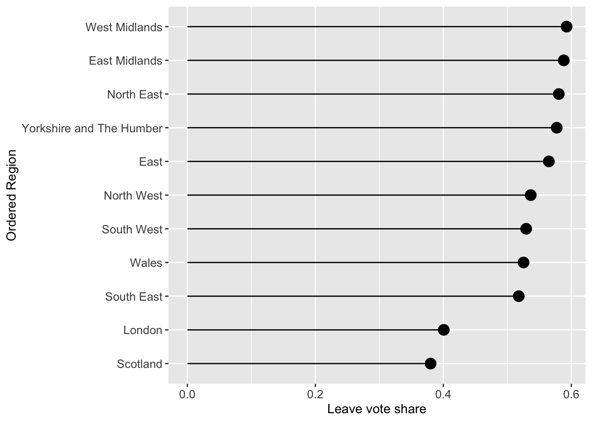
Figure 2.7: A lollipop plot of leave vote share.
The above code may appear confusing, but each line before the line with ggplot can be run to see what the code is doing with the data. For example try running the first few lines to unpick what is going on:
data_tb |>
# group by Region
group_by(Region) |>
# calculate pop_dens and share_leave
summarise(pop_dens = sum(total_pop) / sum(st_areasha * 0.01),
share_leave=sum(Leave)/sum(Leave, Remain)) ## # A tibble: 11 × 3
## Region pop_dens share_leave
## <chr> <dbl> <dbl>
## 1 East 0.0306 0.565
## 2 East Midlands 0.0290 0.588
## 3 London 0.518 0.401
## 4 North East 0.0302 0.580
## 5 North West 0.0498 0.537
## 6 Scotland 0.00673 0.380
## 7 South East 0.0452 0.518
## 8 South West 0.0222 0.529
## 9 Wales 0.0147 0.525
## 10 West Midlands 0.0431 0.593
## 11 Yorkshire and The Humber 0.0343 0.5772.4.4 A final example
All the approaches until now have examined graphics showing univariate or bivariate (pair-wise) structure or relations. It it sometimes useful to examine multiple variables together. This can be done using radar plots using the coord_polar function with an aggregate function can be used to generate and display summaries (such as means) of the variables. The code below examines differences in the properties of LADs that had a majority Leave vote. You may also wish to examine the intermediary outputs (for example the effects of the selection, data lengthening, etc) by running blocks of code, remembering to either omit the last pipe or in this case by inserting head() after each |> (as the input is a data.frame).
# hard recode the region name
data_tb$Region <- recode(data_tb$Region, "Yorkshire and The Humber" = "Yorks & Humber")
data_tb %>%
# select the data
select(Region, share_leave:eu_born) |>
select(-total_pop, -margin_leave, -private_transport_to_work, -christian, - eu_born) |>
# rename the variables
rename(leave = share_leave,
young = younger_adults,
engspeak = english_speaking,
singleeh = single_ethnicity_household,
health = not_good_health,
degree = degree_educated,
prof = professionals,
nocar = no_car,
ownhome = own_home) |>
# rescale using z-scores for the numeric variables
mutate_if(is.numeric, scale) |>
# filter for Leave LADs (majority leave vote)
filter(as.vector(leave) > 0.5) |>
# now remove the leave vote
select(-leave) |>
# aggregate by region
group_by(Region) |>
summarise_all(mean) |>
# lengthen to a tidy data frame
pivot_longer(-Region) |>
# sort by the variable names - this is needed for the plot
arrange(name) |>
ggplot() +
# make custom panel grid with lines
geom_hline(
aes(yintercept = y),
data.frame(y = c(-0:1)),
color = "lightgrey"
) +
# add a dashed line for 0
geom_hline(
aes(yintercept = y),
data.frame(y = 0),
color = "black",
linetype = "dashed"
) +
# add bars to represent the values
geom_col(
aes(
x = name,
y = value,
group = Region,
fill = Region
),
) +
# facet
facet_wrap(~Region, ncol = 5)+
# make polar / radar
coord_polar() +
# tidy the plot
theme_light() +
theme(legend.position = "none",
axis.title = element_blank(),
axis.text = element_text(size = 8),
strip.text = element_text(size = 14, face = "bold", colour = "black"),
strip.background = element_rect(fill="white", colour = "black"),
panel.grid = element_line(color = "gray80", linewidth = 0.5))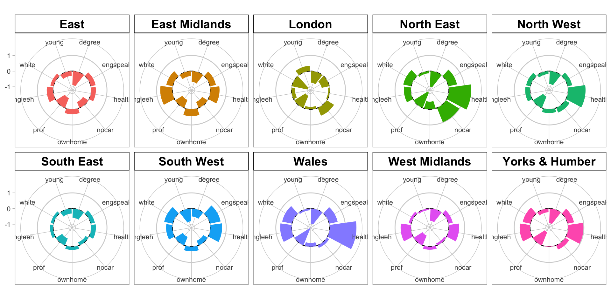
Figure 2.8: A polar plot of the regional differences associated with LADs with the leave share > 50% .
Here we can see that there are no LADS in Scotland that had a majority Leave vote and that there are clear differences in the leave vote in different Regions. Compare for example London and Wales… there are similarities as well for example between East and the East Midlands…
Answers to Tasks
Task 1: the code below creates a scatter plot of the share_leave and single_ethnicity_household variables using the generic plot function. Your task is to recreate this using ggplot and add a linear trend line.
# Task 1
plot(single_ethnicity_household ~ share_leave, data = data_gb,
pch = 4, col = "dodgerblue", cex = 0.5)ggplot(data_gb, aes(x = share_leave, y = single_ethnicity_household)) +
geom_point(shape = 4, col = "dodgerblue", size = 1.5) +
geom_smooth(method = "lm") +
theme_bw()You may also want to look at at the following link for some further tips https://felixfan.github.io/ggplot2-remove-grid-background-margin/
Task 2: Complete the code snippet below to create a set of histograms of the share_leave variable, faceted for the Regions
# Task 2
ggplot(data = data_gb, mapping = aes(x = share_leave)) +
geom_histogram(aes(y=after_stat(density)), bins = 15,
fill="tomato", col="white") +
# specify the faceting
facet_wrap("Region", nrow = 3) Task 3: The above code creates a faceted plot of the share_leave and no_car variables. The facets show that the relationship is broadly the same (examine the angle of the slopes) in the different regions. Your task is to examine the relationship with between the share_leave and single_ethnicity_household variables and to determine whether there are regional differences in this relationship:
The code below explores this and the differences in the slopes show that this relationship varies across regions. Compare London (strong positive linear relationship) with the East Midlands for example (weaker flatter relationship): in this case it would seem that the association of this factors with Leave voting is much weaker in the East Midlands indicating the importance of other factors.
# Task 3
ggplot(data = data_gb, mapping = aes(x = share_leave, y = single_ethnicity_household)) +
geom_point() +
# add a trend line
geom_smooth(method = "lm", colour = "#DE2D26") +
# specify the faceting and a theme / style
facet_wrap("Region", nrow = 3) +
theme_minimal() Task 4: Your task is to write some code that takes data_tb, create a new variable called Cars that partitions the data around private_transport_to_work greater than 0.5, and summarises the data by Regions and calculates the mean leave_share. Q: What do you think this is showing?
# Task 4
data_tb |>
mutate(Cars=private_transport_to_work> 0.5) |>
group_by(Region, Cars) |>
summarise(`Leave Share`=median(share_leave), N=n())A: That areas with high / low levels of private_transport_to_work have very different vote leave vote shares.
Additional Resources
Density histograms explained: https://homepage.divms.uiowa.edu/~luke/classes/STAT4580/histdens.html
The BBC’s use of ggplot2: https://medium.com/bbc-visual-and-data-journalism/how-the-bbc-visual-and-data-journalism-team-works-with-graphics-in-r-ed0b35693535
An excellent recent online book by one of our colleages: Roger Beecham (2025). Visualization for Social Data Science, Chapman and Hall/CRC Press. Free online version here: https://vis4sds.github.io/vis4sds/
There is an excellent video on piping here, although with the dplyr pipe of %>% - the message is still same: https://www.youtube.com/watch?v=ANMuuq502rE
There is a more in-depth visualisation practical from Roger Beecham developing the analyses of these data. You may wish to come to this later in the module after your are more familiar with R http://homepages.see.leeds.ac.uk/~georjb/geocomp/03_datavis/lab.html
Finally: much of practical was drawn from Chapters 2, 3 and 5 of this book - https://uk.sagepub.com/en-gb/eur/geographical-data-science-and-spatial-data-analysis/book260671
EDA with R by Wickham - https://r4ds.had.co.nz/exploratory-data-analysis.html
There are some useful Data Resources also:
- ONS spatial data: https://geoportal.statistics.gov.uk/search?collection=Map
- Spatial data from ONS (shapefile format) - https://www.data.gov.uk/search?q=&filters%5Bpublisher%5D=&filters%5Btopic%5D=Mapping&filters%5Bformat%5D=SHP&sort=best
- House of Commons data: https://commonslibrary.parliament.uk/data-tools-and-resources/
- uk-hex-cartograms-noncontiguous, House of Commons github, https://github.com/houseofcommonslibrary/uk-hex-cartograms-noncontiguous
- the
parlitoolspackage has lots of voting data https://cran.r-project.org/web/packages/parlitools/vignettes/introduction.html
Optional: enhanced mapping with the ggplot2 package
As you saw on Week 1, the ggplot2 package can also be used to visualise spatial data. This section provides some further examples of how to do this with point and area data.
You will need to load the ggspatial package into your R session:
# ggspatial for mapping with ggplot
if (!is.element("ggspatial", installed.packages()))
install.packages("ggspatial", dep = T)
library(ggspatial)The code below selects the LADs in the East Midlands for us to work with to create an sf object from a subset of data_gb:
The code below plots the east_mids dataset introduced above using the ggplot2 package:
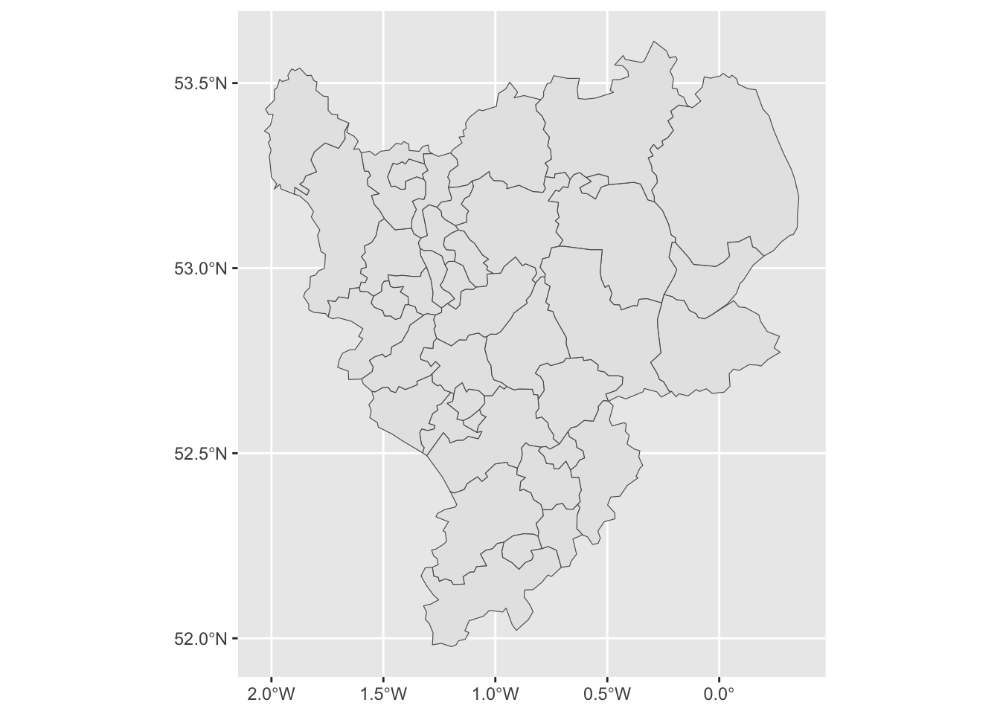
Figure 2.9: The LADs in the East Midlands.
The geom_sf function, adds a geometry stored in an sf object to the plot. It looks for an attribute called geom or geometry in the sf object. On occasion you may need to specify this as in the code snippet below.
As with other ggplot operations, colour can be specified directly or for a variable, by specifying plotting aesthetics (aes) using fill or colour depending on the what is being shaded in the plot:
# directly
ggplot(east_mids) +
geom_sf(aes(geometry = geometry), colour = "darkgrey", fill = "azure")
# using a continuous variable and specifying a thin line size
ggplot(east_mids) +
geom_sf(aes(geometry = geometry, fill = degree_educated), linewidth = 0.1) +
scale_fill_viridis_c(name = "Degree educated")It is also possible to enhance the map by adding scale bars and north arrows using some of the functions in the ggspatial package. We can also control the appearance of the map using both predefined themes (such theme_bw) and specific theme elements. Examples of some of these are shown in the code below to create the figure below:
ggplot(east_mids) +
geom_sf(aes(geometry = geometry, fill = not_good_health), size = 0.1) +
scale_fill_viridis_c(name = "Poor Health") +
annotation_scale(location = "tl") +
annotation_north_arrow(location = "tl", which_north = "true",
pad_x = unit(0.9, "in"), pad_y = unit(0.25, "in"),
style = north_arrow_fancy_orienteering) +
theme_bw() +
theme(panel.grid.major = element_line(color = gray(.5), linetype="dashed", linewidth=0.5),
panel.background = element_rect(fill="white"))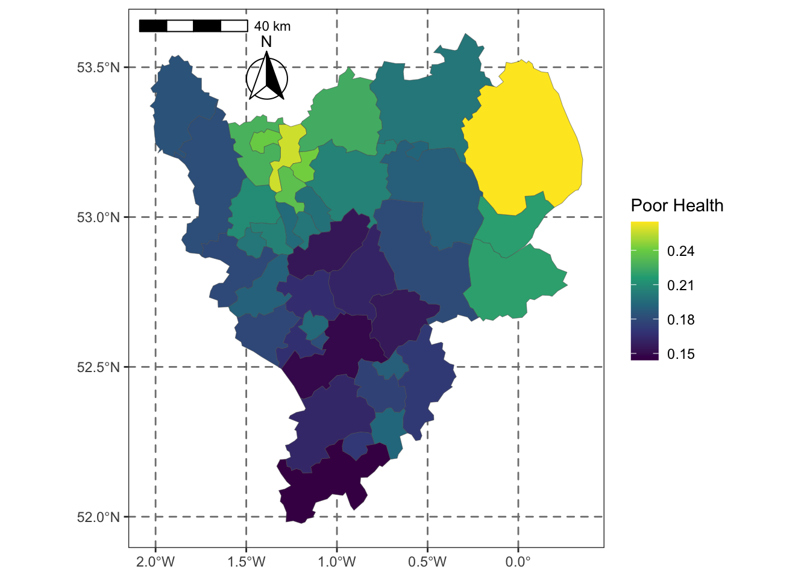
Figure 2.10: Poor Health in LADs in the East Midlands.
Multiple data layers can be included in the map. The code below creates and then adds the locations and names of some randomly selected LADs to the map (Note the set.seed() function makes sure that you all select the same random sample!).
set.seed(13)
labels.data = east_mids[sample(1:nrow(east_mids), 10), ]
labels.data = cbind(labels.data, st_coordinates(st_centroid(labels.data)))
# create the ggplot
ggplot(east_mids) +
geom_sf(aes(geometry = geometry), fill = "white", linewidth = 0.1) +
geom_point(data = labels.data, aes(x=X, y=Y), colour = "red") +
geom_text(data = labels.data, aes(x=X, y=Y, label=lad15nm),
fontface = "bold", check_overlap = T) +
theme_bw() +
theme(axis.title = element_blank())A final trick is to include a backdrop to the map. This is not interactive, but instead loads tiles of backdrop maps to provide context. This can be done using the annotation_map_tile function from ggspatial. Note the order it needs to be placed in the sequence ggplot layers of commands:
ggplot(east_mids) +
annotation_map_tile(zoomin=0, type='osm') +
geom_sf(aes(geometry = geometry, fill = degree_educated), linewidth = 0.1, alpha = 0.5) +
scale_fill_viridis_c(name = "Degree educated")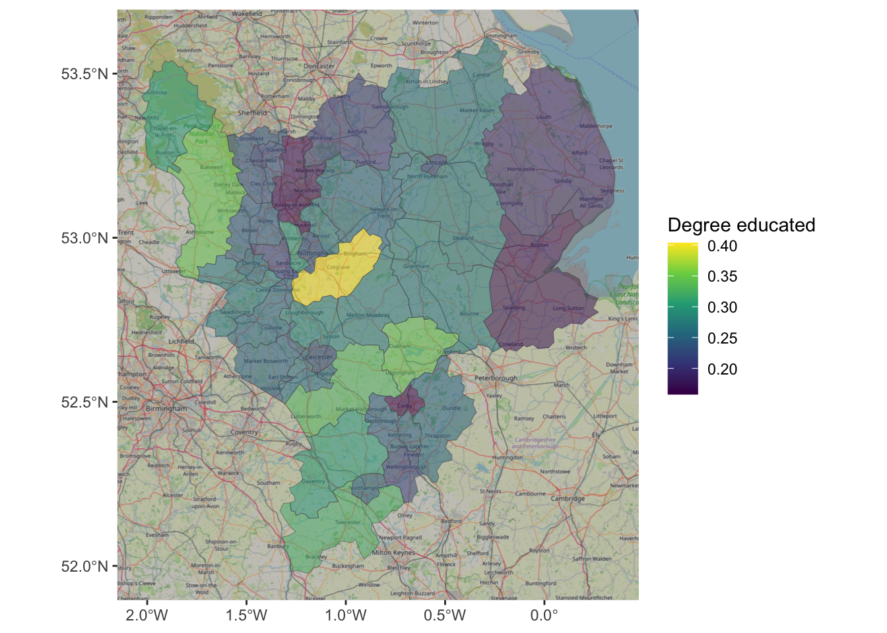
Figure 2.11: An example of using OSM as background context.
Often in geographic analyses were are interested where behaviour changes or flips. So for example a key thing we may be interested in, that cannot be directly determined using the aspatial bivariate and multivariate approaches (correlations, correspondence tables etc), are the locations where for example leave votes were high or low.
The code below partitions the data around median leave share. This shows that there are clear spatial trends.
data_gb %>%
mutate(leave = ifelse(share_leave > median(share_leave), "Higher","Lower")) %>%
ggplot() +
geom_sf(aes(geometry = geometry, fill = leave), col = "grey", size = 0.0) +
scale_fill_discrete(name = "Leave > median?") +
theme_bw()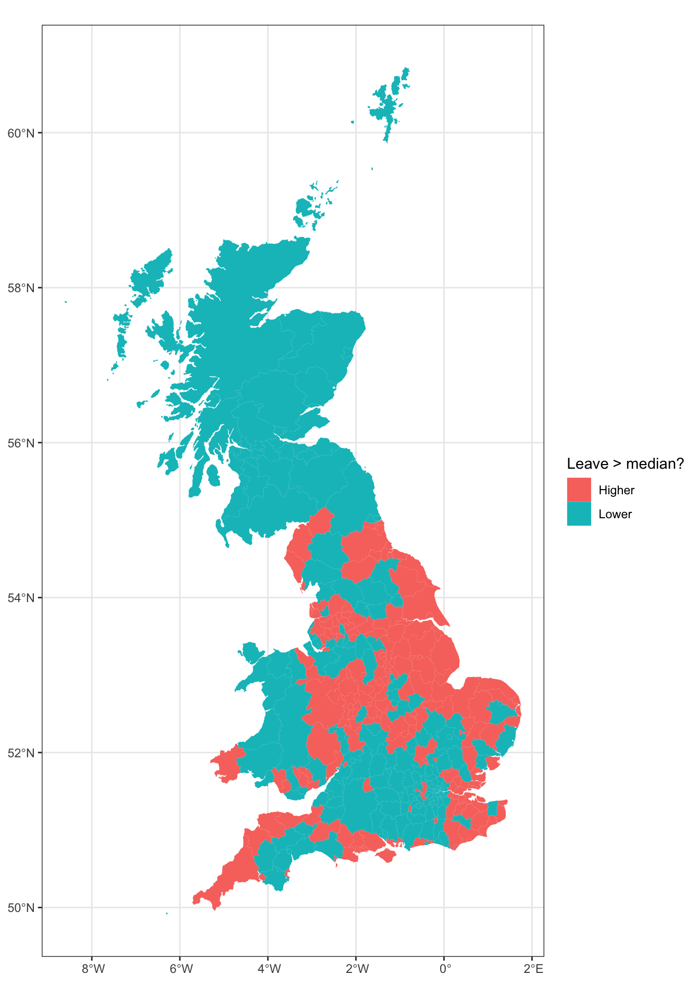
Figure 2.12: A map of LADs where the leave vote share was higher and lower than the median.
Appendix: Named Colours
This section is just for your information.
R has a number of named colours. You can list them by entering
For those interested the code used is listed below. You’ll need the kableExtra package installed to get this to work.
library(kableExtra)
### Matrix of rgb values for each named colour
rgbmat <- t(col2rgb(colors()))
### Turned into hex formats
hexes <- apply(rgbmat, 1, function(x) sprintf("#%02X%02X%02X",x[1],x[2],x[3]))
### These will be backgrounds - foreground either black or white depending on lightness of colour
textcol <- ifelse(rowMeans(rgbmat) > 156, 'black', 'white')
### Now create the cells with fg/bg colour spec
cols <- colours()
cols <- cell_spec(cols,background=hexes,color=textcol)
### Make this a grid
colour_grid <- matrix(c(cols,rep("",7)),83,8)
colnames(colour_grid)=rep(" ",8)
### Use kableExtra stuff to create html table
ktab <- kable(colour_grid,align='l',format='html',escape=FALSE)
kable_styling(ktab)